Installasjon
For å installere app på Android mobiltelefon:
- Åpne Google Play og let etter "SSKOR".
- Trykk på Installer.
For å installere app på Windows PC:
- Last ned Windows-versjonen ved å klikke på lenken nedenfor.
- Pakk ut zip-filen til en ønsket plassering på din Windows PC.
- Start appen ved å åpne katalogen og dobbeltklikke på filen "choir".
Bruk av App
Windows-appen og Android-appen er ganske like, bortsett fra at Windows-appen ikke kan skanne strekkoder på noter og brukere.
Brukere/Medlemmer
Denne siden kan brukes til å redigere medlemmer i koret og skrive ut strekkoder.
Her listes alle kormedlemmer som er registrert i appen.
Legge inn et nytt medlem:
- Trykk på pluss-knappen (+).
- Legg inn en Bruker-ID som brukes for å generere strekkode. Denne bør være kort, helst et fornavn og initialer for følgende navn (ex: Kari S T).
- Legg inn brukerens fulle navn for lettere visning i appen (valgfritt).
- Legg inn mail-adresse om ønskelig.
- Lagre.
Slette et medlem som har sluttet:
- Bruk de tre prikkene (⋮) til høyre for navnet og velg slett.
- Du kan bare slette brukere som ikke har noter utlånt.
Skrive ut strekkoder for medlemmer:
- Velg medlemmer i listen med å trykke/klikke lenge på den første og så trykke/klikke på resten. Vil du skrive ut alle medlemmene velger du ingen.
- Trykk på printer-ikonet (🖨️). Det blir generert en pdf.
- Velg hvor du vil legge filen, f.eks. Windows explorer.
- Åpne filen på en mobil/PC som er tilkoblet printer og velg Skriv ut.
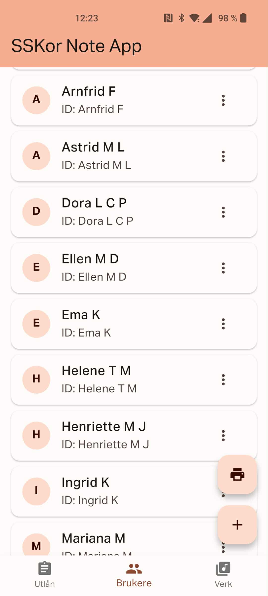
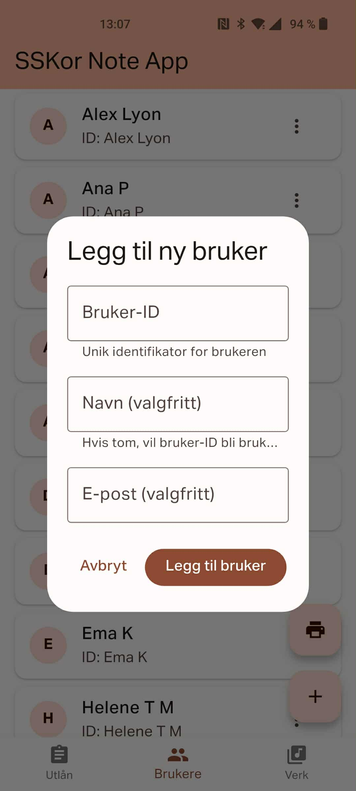
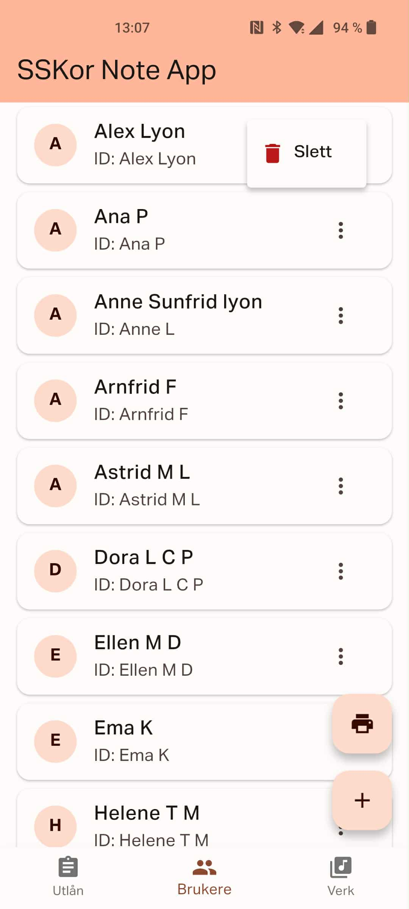
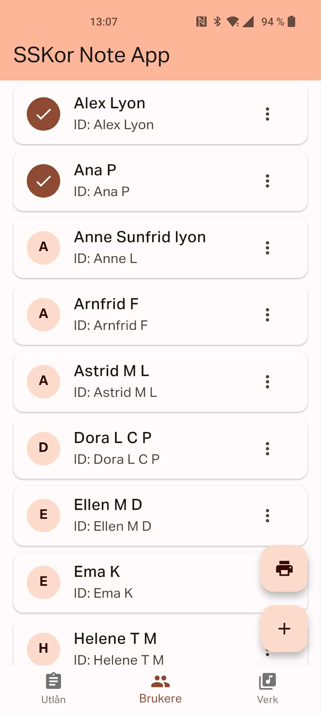
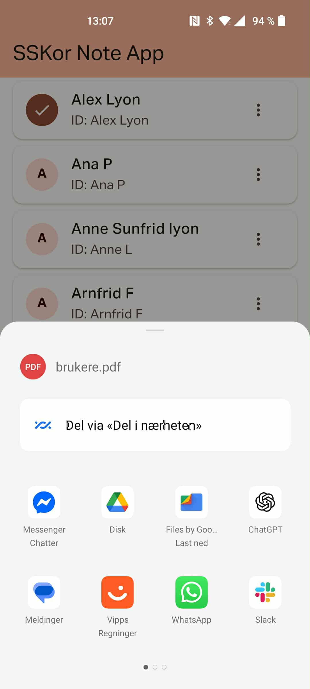
Verk
Denne siden kan brukes til å legge til nye verk og skrive ut strekkoder.
Her listes alle verk som er registrert i appen.
Legge til et nytt verk:
- Trykk på pluss-ikonet (+) og legg til et nytt verk.
- Bruk et kort navn for Verk-ID, dette skal generere strekkoden.
- Legg inn lang tittel og eventuelt komponist hvis ønskelig.
- Lagre.
Skrive ut strekkoder for et verk:
- Trykk på printer-ikonet (🖨️).
-
Helt nederst, velg hvor mange sider du vil
skrive ut:
- Den vil alltid begynne på nummer 1 og skrive 33 strekkoder per side.
- Vil du bare legge til nummer til eksisterende strekkoder, f.eks. du bare trenger nummer 60-80, så skriv ut tre sider, men i printer-appen bare skriv ut siste siden. Fra dette arket bruk de klistrelappene du trenger.
- Velg et verk du vil skrive ut for.
- Velg hvor du vil legge filen, f.eks. Windows explorer.
- Åpne filen på en mobil/PC som er tilkoblet printer og velg Skriv ut.
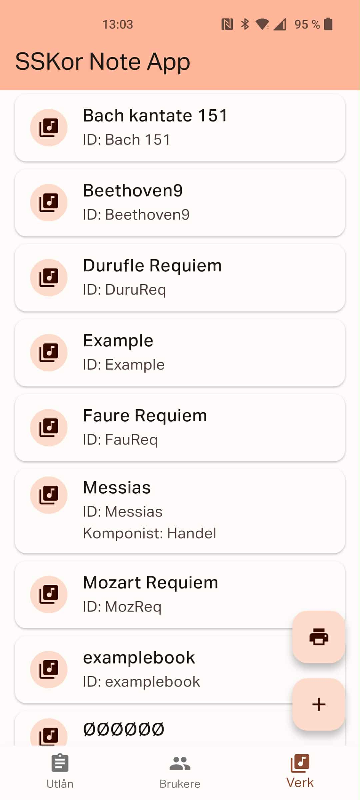
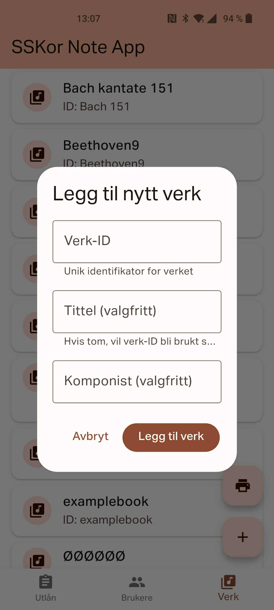
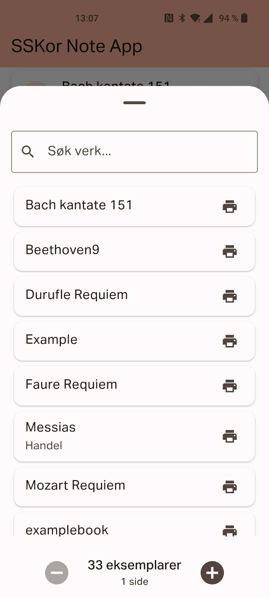
Utlån og retur
Her skannes strekkoder ved utlån og retur. Alle lån som er registrert vil listes her.
Låne ut nye noter:
- Pass på du har strekkode for medlem og noter. Hvis ikke, følg stegene over.
- Skann først strekkoden på noten.
- Skann så strekkoden til medlemmet.
- Listen over utlånte noter blir nå oppdatert.
Returnere noter:
- Skann strekkoden på noten.
- Lånet vil nå bli flyttet fra Utlån til Arkivert.
Se noter som er innlevert:
- Trykk på Arkivert-knappen og alle noter som er innlevert listes.
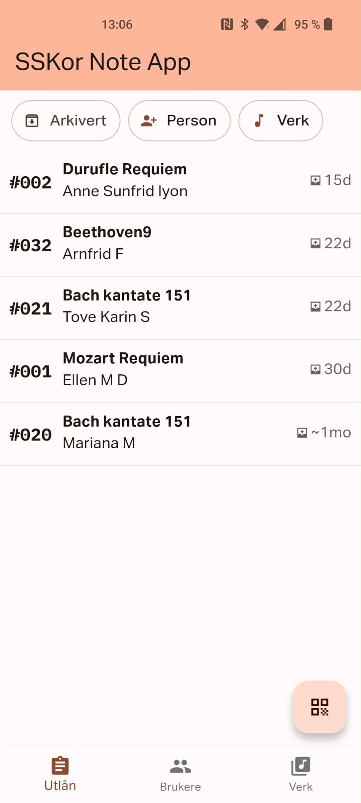
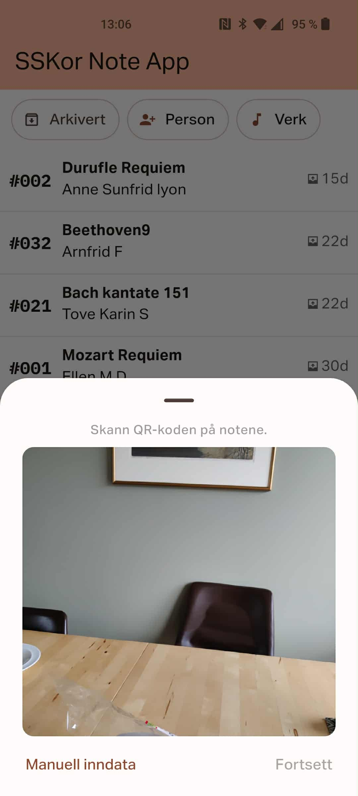
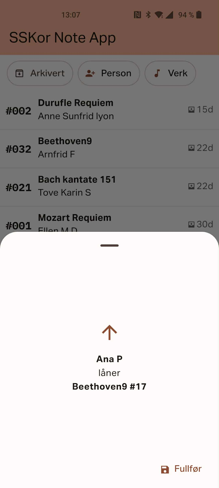
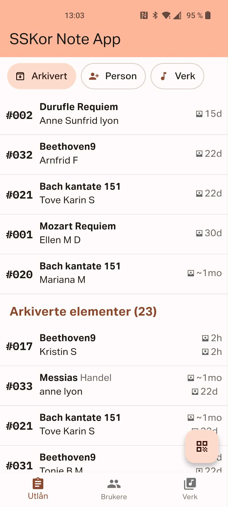
Filtrere på medlemmer eller noter
Trykk på Person- eller Verk-knappen og velg en eller flere, du kan begynne å taste inn navn for å skrumpe inn listen.
Utlån-listen, og Arkivert-listen vil nå bare vise de du har filtrert ut. For å slette filter kryss vekk filteret i knapperekken øverst eller trykk på Person/Verk og velg vekk alle kryss.
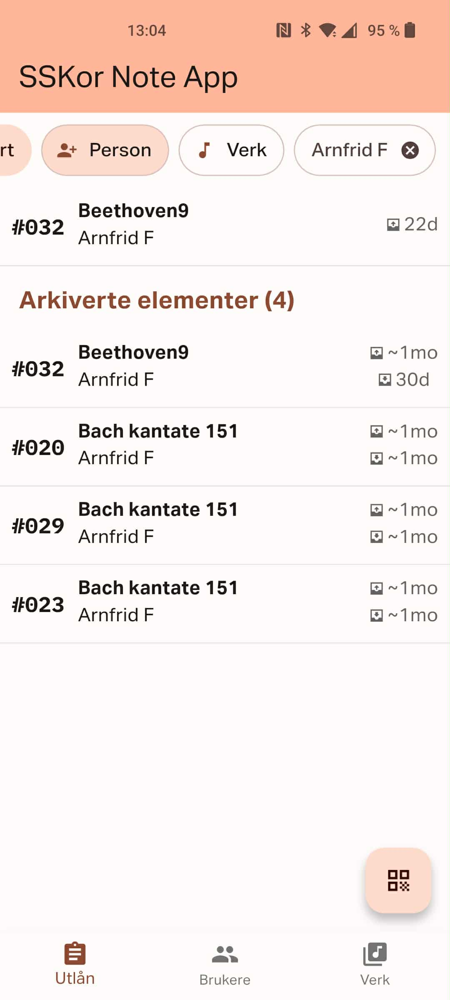
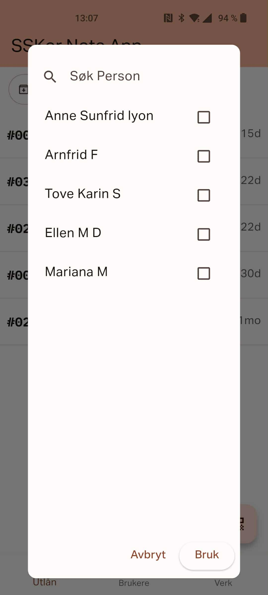
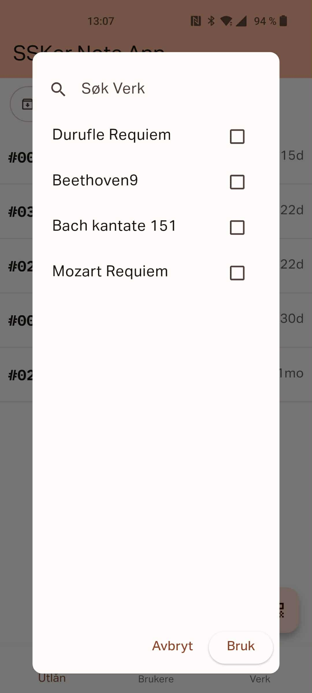